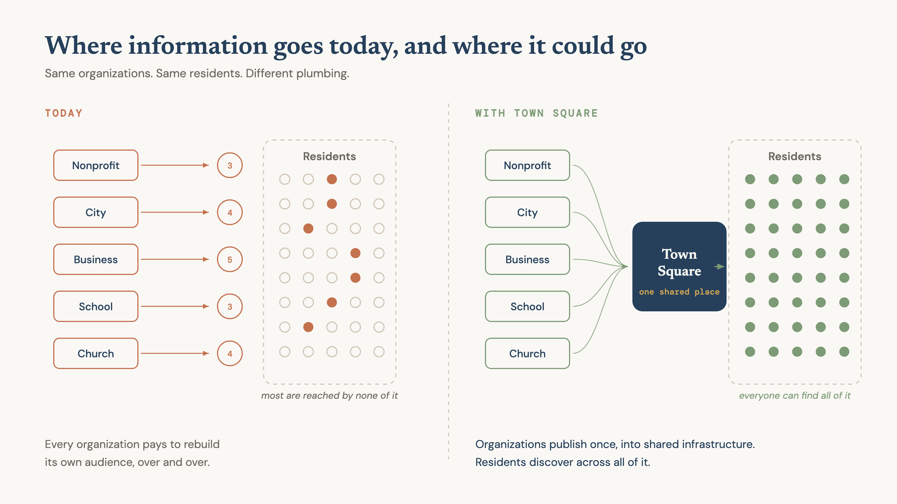
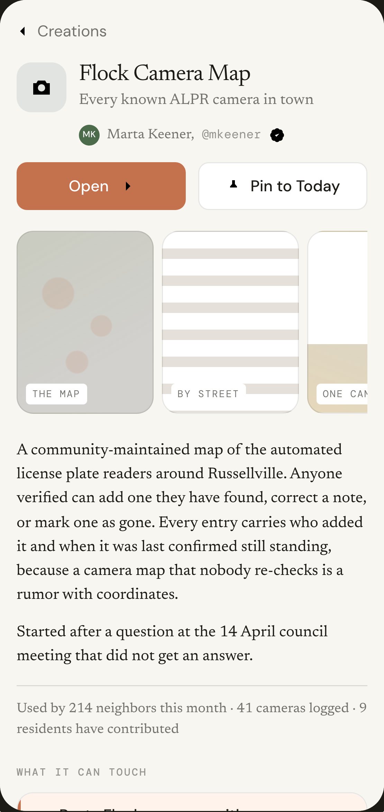
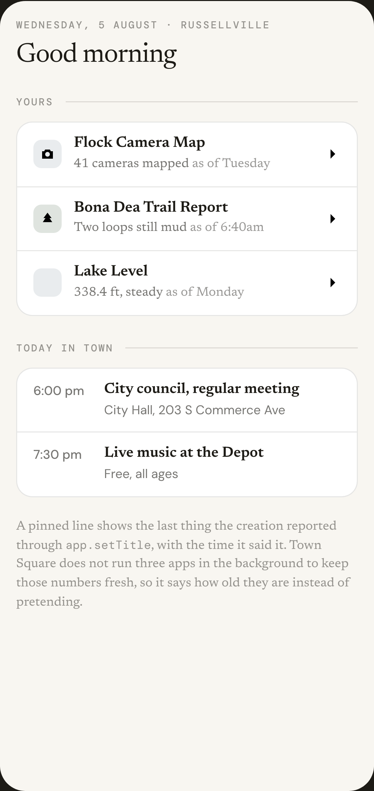
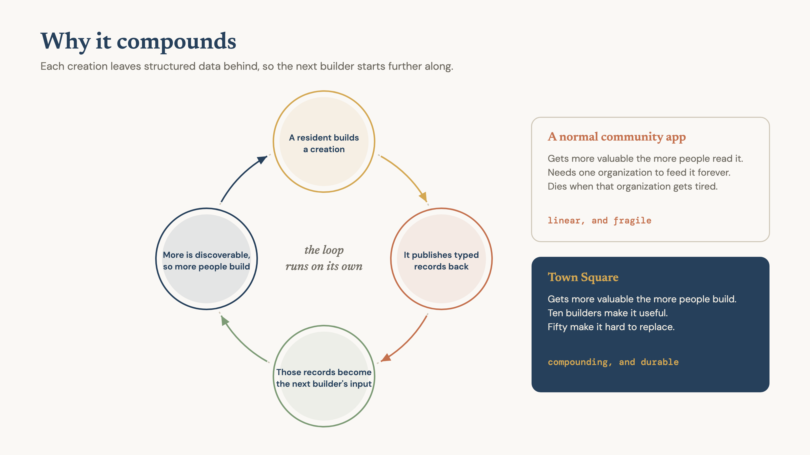
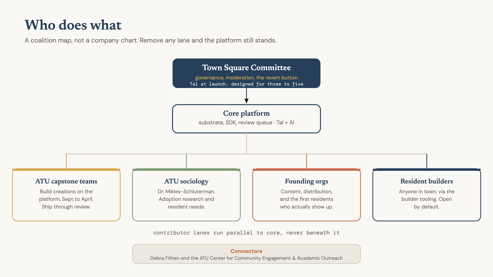

A town square the town actually owns, built so anyone who
lives here can add to it.
Prepared for the ATU CCEAO community coalition · August 2026
August 6, 2026 · Co-Create Innovation Hub
Before anyone mentioned software
We went around the room and named problems. These came up on
their own.
“People are not involved.”
“People do not know what is happening.”
“It costs money just to send an email.”
We have been hearing a version of this for a decade, and
louder every year since Covid. Ask the same question in any town in America
and you get these same answers back. ATU documented the same needs list
before we ever walked in.
TOWN SQUARE
The reframe
That is not four problems. It is one problem showing up as different symptoms.
Russellville does not have a town square anymore. So every organization
rebuilds its own audience from scratch, forever, and every resident
assembles their own patchwork and still misses most of it.
How we got here
A community's most valuable asset is its attention
And for most of a century, that attention had somewhere to
live.
What we had
The paper on the porch. The radio in the truck.
Analog, physical, local, and imperfect. It worked. If something
mattered, it reached you, and the institution carrying it lived in the
same town you did.
What we did
We gave it away.
Not to another local institution. We handed it to Zuckerberg and
friends, to companies two thousand miles from here that rent our
attention back to us and decide, day to day, who sees what.
The old infrastructure did not
simply fade out. It was replaced by something that was never built to serve
a town in the first place.
TOWN SQUARE

Why we are not already fine
The usual answers, and why they keep failing
Facebook groups
Rented land. There is an
algorithm between you and the people who explicitly asked to hear from
you, and the terms change whenever someone else decides they should.
Local news
Thinning, here and everywhere. What
is left cannot cover a school board, a quorum court, a planning
commission, and forty nonprofits.
The city website
Built to satisfy a legal
requirement to publish, not to help you understand. A PDF posted on time
is compliance. It is not communication.
Email lists
Expensive, one-way, and siloed.
Everyone pays separately to reach the same overlapping people, and none of
it helps a resident find you in the first place.
And another app does not fix it
either. Every community app so far is a product people consume, so it lives
or dies on one organization feeding it forever.
TOWN SQUARE
Layer three, the part that is different
Residents build the town's software
In 2026 a person with an idea and an afternoon can build a
small working app. What they cannot do is give it a home, an audience, or a
way to connect to anything else in town. That is what this is.
THE GALLERY

A CREATION, RUNNINGA RESIDENT WHO BUILT ONE

PINNED INTO THE TOWN
TOWN SQUARE
What a neighbor might make
Town Square does not build these. It is what they stand on.
Watchdog
What is bearing down on us
The license plate readers. The data centers. Whatever is next. Tracked
by the people who actually live here.
Civic
What the council decided
Plain English, every meeting, so following your own local government
does not require reading a PDF written for the record.
Delight
The best tamales in town
Not everything has to be civic. Some of it just has to be worth
arguing about.
Commerce
Buy, sell, and trade
A marketplace that belongs to the town, instead of one more thing
happening in somebody else's app.
Service
Who needs help Saturday
Every local nonprofit posting volunteer shifts in one place, free,
instead of each one paying to email the same 200 people.
Their own thing
A podcast, a cause, a business
Promote it, grow it, and yes, make money doing it. That is allowed and
it is supposed to be.
And every one of them has to
leave something behind, so the next person starts with what the last person
figured out.
TOWN SQUARE

Ownership
Nobody should own a town square.
In the early days, Facebook called itself the digital town
square. They were right about what they were building. They were also the
ones who owned it, and they sell it.
This is not an argument against free enterprise. But when the town square
itself has been bought and paid for by interests two thousand miles away,
the community does not get to decide what happens in it anymore.
And this already cost us something
The harm is not theoretical
Who gets squeezed first
The smallest budgets
When the only reliable way to reach your neighbors is a channel you
pay for, the organizations priced out are the ones doing the most
urgent work.
What that means
A message that never arrives
The crisis line. The shelter with beds open tonight. The closing
enrollment window. There is a person on the other end of that message,
and consequences when it does not reach them.
The slower damage
Civic fabric thins
Participation drops. People stop knowing their neighbors, stop showing
up, stop trusting institutions they no longer hear from directly.
Which is a research question, and an ask
Nobody has measured any of this in Russellville.
We would like ATU to help: a study that quantifies what losing a shared local
information channel has actually done here, and what can be done about it.
Naming the harm precisely is the first step to fixing it.
TOWN SQUARE
So here is how this one is held
Owned by the town instead of by us
Open source
Another town can just take it
Fork it, run it, adapt it, no permission needed. Russellville is town
one, not the only town.
A local committee
Not a company, not a person
Governance and the revert button sit with a local Town Square
committee. An adopting town stands up its own.
Vouching
Residents vouch for residents
We store that you are verified. We never store where you live.
Verified does not mean publicly identified.
Light touch
A neutral place, not a publisher
Not an editorial product. Every record is versioned, attributed, and
revertable, which is what lets it stay neutral.
TOWN SQUARE

What we are asking
Four different asks, depending on who you are
Nonprofits and service orgs
Be a founding organization. Post your events,
services, and volunteer needs. You are the first real content, and you
stop paying to reach people who already want to hear from you.
ATU faculty
Put a capstone team on one of our project briefs.
Students build on a running platform instead of from zero, and nothing
they make is orphaned in April.
Community leaders
Be part of the seed cohort. Residency is verified
by neighbors vouching for neighbors, and that has to start with people
the town already trusts.
Anyone who builds
Make something. The tooling is live. If you have
an idea and an afternoon, you now have somewhere to put it.
TOWN SQUARE
What happens next
September to April
The academic calendar sets the pace, and it happens to be a
good one.
Late Aug – Sept
Teams and briefs
ATU forms capstone teams and selects projects.
Partners are contacted by mid-September.
Fall
Requirements and prototypes
Teams meet their partners, scope the
work, and get a proof of concept in front of real people.
Spring
Build, test, review
Development and testing, then submission
through the same review gate every resident builder passes.
April
Live, and a public showcase
Finished work in front of the town,
running on infrastructure that outlives the semester.
The platform is built. What it
needs now is not code. It needs the town.